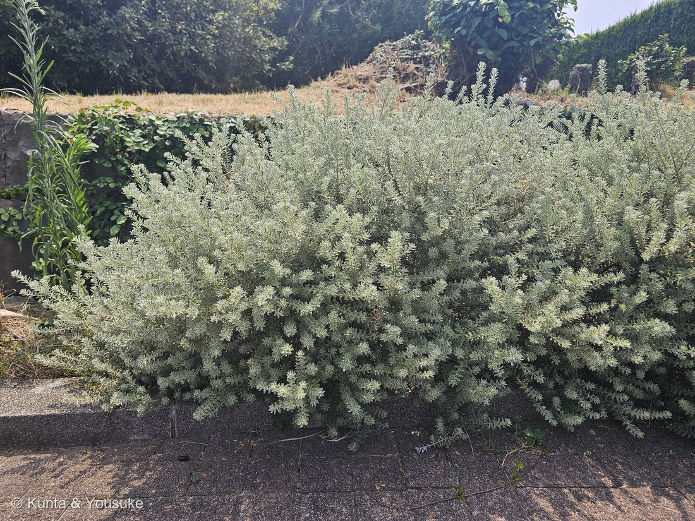
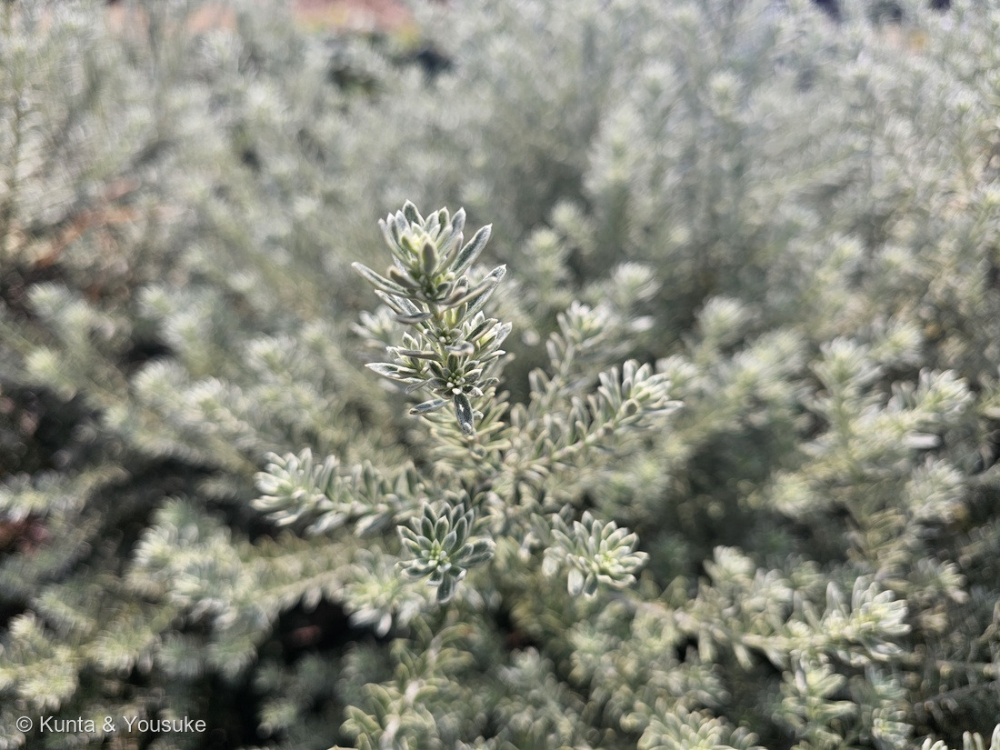
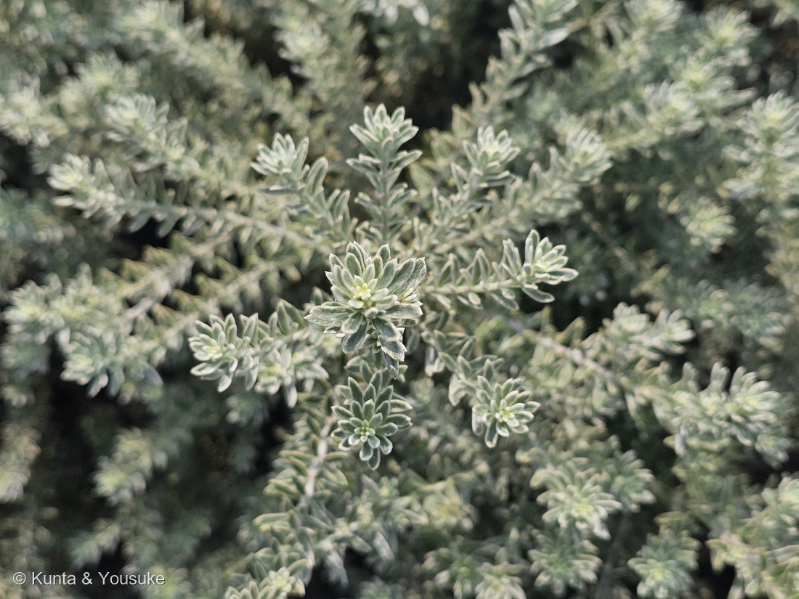
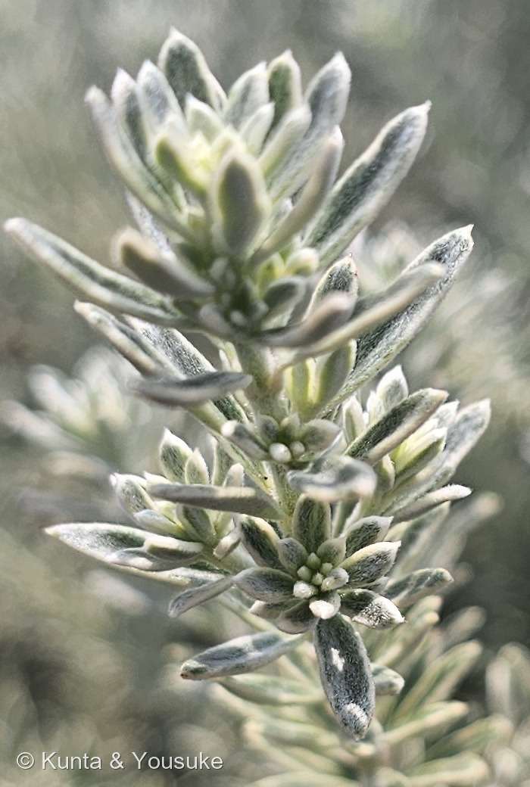

地図を読み込んでいるよ…
🔍 写真も地図も、押しているあいだ拡大して見られるよ（スマホは指を置いてすこし待ってね）。
🌍 の地図＝この子がもともと自生している場所を緑に。オーストラリア東部（ニューサウスウェールズ州）の海岸。海ぎわや港の岸の、風当たりの強い崖の浅い土に生える。日本では南関東より西の暖かい地方で、庭木として屋外で冬を越す。くわしくは下の地図の説明を見てね。
⭐オーストラリア東部の海岸の子だよ＝PlantNET（シドニー王立植物園）は「海や港の岸の近く、風当たりの強い崖の浅い土に生える。フォースターからイーデンまで」とする＝ニューサウスウェールズ州の海岸。⚠地図は国ごとにしか塗れないので、オーストラリアぜんぶが緑なのはとても広めだよ。⭐森きららのこの株は、植えられた園芸品種（斑入り）。
⚠ 地図は国（日本と中国だけ県・省）までしか塗れないから、ほんとうの分布より広く見えていることがあるよ。地図はだいたいの場所。正確なところは、上の文を見てね。
ウエストリンギア（斑入りの品種）
Westringia fruticosa (Willd.) Druce（⚠品種名は決めていない）
別名 · オーストラリアン・ローズマリー／英名 coastal rosemary・coastal westringia
シソ科 · Lamiaceae（ウエストリンギア属 Westringia · シソ目 Lamiales）── ⭐309 ニンジンボク（同じ日・同じ森きらら）や021 スイートバジルと同じシソ科／⭐⭐ウエストリンギア属ははじめて
燻太さんの言葉「この植物は、とても特徴的な葉っぱをしているんだけど、何の植物か判別が難しい。白と緑の葉っぱで、遠目で見たら銀色にも見える素敵な低木なんだけどね。」── ⭐近くで「白と緑」、遠くで「銀色」＝どっちも本当だった
⭐⭐⭐⭐ 名前と学名の由来 ── スウェーデンのお医者さんと「低木の」
- ⭐⭐ 属名 Westringia＝18世紀のスウェーデンのお医者さん、J. P. ウェストリング（J. P. Westring）にちなむ（ANBG＝オーストラリア国立植物園）。
- ⭐⭐ 種小名 fruticosa＝「低木の、こんもりした」（ANBG）。⭐写真①の、こんもり横に広がった姿そのまま。
- ⭐⭐⭐ 別名「オーストラリアン・ローズマリー」＝葉や花の雰囲気がローズマリーに似ているから。⚠でもローズマリーとは別の植物で、株はやわらかく、香りも無い（花と緑の図鑑 Garden vision）。⭐英名も「coastal rosemary（海岸のローズマリー）」（英語版Wikipedia）。
⭐⭐⭐ この植物のこと ── 海の崖に生える、オーストラリアの低木
- ⭐⭐⭐ ふるさとは、オーストラリア東部・ニューサウスウェールズ州の海岸＝「海や港の岸の近く、風当たりの強い崖の、浅い土に生える」（PlantNET＝シドニー王立植物園）。⭐「海のすぐそばの崖にも生える、とても丈夫な低木」（英語版Wikipedia）。
- ⭐⭐ 潮風に強いので、海辺の庭に向いている（ANBG）。⭐九十九島の海のそばの森きららにいるのも、ぴったりだね（⚠ぼくの読み）。
- ⭐⭐ 花は白〜ごくうすい藤色で、のどに赤や黄褐色の点（ANBG）。⭐上の花びらが2つに分かれる、おもしろい形（Garden vision）。⭐原産地ではほぼ一年じゅう咲く（PlantNET・ANBG）けれど、日本では初夏と秋に咲くことが多い（Garden vision）。
- ⭐⭐ 斑入りの品種がいくつも出回っている＝「スモーキー」は葉のふちに白い斑、花は白／「モーニング・ライト」はくっきりした黄色い斑、花は青紫（Garden vision）。
- ⭐ 乾燥に強く、じめじめは苦手。南関東より西の暖かい地方なら、屋外で冬を越す（Garden vision）。
⚠ 同定について ── 輪になってつく細い葉と、銀色の毛
- ⭐⭐⭐⭐ ウエストリンギア Westringia fruticosa とした。⭐決め手は3つ＝①細長い葉が、茎のまわりにぐるりと輪になってつく（写真②③④＝PlantNET「おもに4枚ずつ輪生」）②葉は2cmほどの細い披針形で、毛があって銀色に見える（写真②④＝ANBG）③こんもりした常緑の低木（写真①）。
- ⚠⚠ 1つの節に葉が何枚かは、写真では数えきれなかった＝枝先では葉がロゼットのように重なって、4列に並んでいるようには見える（⚠ぼくの読み）。⏳宿題にしたよ。
- ⭐⭐ 燻太さんの「白と緑の葉っぱ」の白は、2つのものが重なっている＝①葉のふちの白い斑（斑入り品種のしるし＝Garden vision）②葉をおおう毛（ANBG「短い毛があり、銀色をおびる」）。⭐PlantNET は「葉のふちは裏に巻きこむ」とも書いている＝白い毛の生えた裏側が、ふちからのぞくのかもしれない（⚠ぼくの読み）。
- ⭐ 落とした相手＝ローズマリー＝葉が硬くて強い香りがある（Garden vision）。
- ⚠ 品種名は決めない＝名札が写っていないし、8月14日には花が咲いていなかった。⭐白い斑なら「スモーキー」らしいけれど、花の色を見れば決めやすい（Garden vision＝スモーキーは白花・モーニング・ライトは青紫）。
⭐⭐⭐⭐⭐ 燻太さんの「遠目で見たら銀色にも見える」── 銀色の正体
- ⭐ 燻太さんの言葉＝「白と緑の葉っぱで、遠目で見たら銀色にも見える素敵な低木なんだけどね。」
- ⭐⭐⭐ 写真④を大きくすると、葉の表面に細かい毛がびっしり生えている。⭐ANBG は「若い枝先と葉の裏に短い毛があり、それが銀色をおびさせる」と書いている。
- ⭐⭐⭐ そこに、ふちの白い斑が重なる＝近くで見ると「白と緑」、遠くから見ると、小さな葉の白が混ざりあって「銀色」。
- ⭐⭐ 海の崖の植物の毛は、強い日ざしや潮風から葉を守っている、とよく言われる＝⚠この種で確かめた出典は読んでいないので、ここはぼくの読み。
⭐⭐⭐ 同じ日の森きららの、シソ科のなかま
- ⭐⭐ この子は12:45。同じ日の13:12に撮った309 ニンジンボクも、同じシソ科。
- ⭐⭐ 図鑑のシソ科は、これで17人目＝015 ホーリーバジル・021 スイートバジル・175 シソ・180 ブルーサルビアなど。⭐でも、葉が輪になってつく子ははじめて（⚠ぼくの読み＝シソ科は葉が向かいあってつく子が多い）。
⏳ 宿題 ── 4つ
- ⏳⭐⭐⭐ ①花を見る＝白か青紫か（品種の手がかり）、上の花びらが2つに分かれるか、のどの点々。
- ⏳⭐⭐ ②1つの節に葉が何枚か＝枝をそっとのぞいて数える（PlantNET＝おもに4枚、まれに3枚か5枚）。
- ⏳⭐ ③そっとふれて、やわらかいか・香りが無いか（Garden vision）。
- ⏳⭐ ④おまけのローズマリー＝葉の硬さと香りをくらべる。
参考：PlantNET（シドニー王立植物園）「Westringia fruticosa」（高さ・葉はおもに4枚ずつ輪生・葉の大きさ・ふちは裏に巻きこむ・裏の白い毛・花冠は白に紫か茶色の点・一年じゅう咲く・海岸の崖に生える）／ANBG（オーストラリア国立植物園）「Westringia fruticosa」（属名と種小名の由来・輪生する葉・短い毛で銀色・花・潮風に強い）／英語版Wikipedia「Westringia fruticosa」（英名・海のそばの崖）／花と緑の図鑑 Garden vision「ウエストリンギア」（別名オーストラリアン・ローズマリー・ローズマリーとの見わけ・日本での花期・冬越し・品種スモーキーとモーニング・ライト）／GBIF（学名）